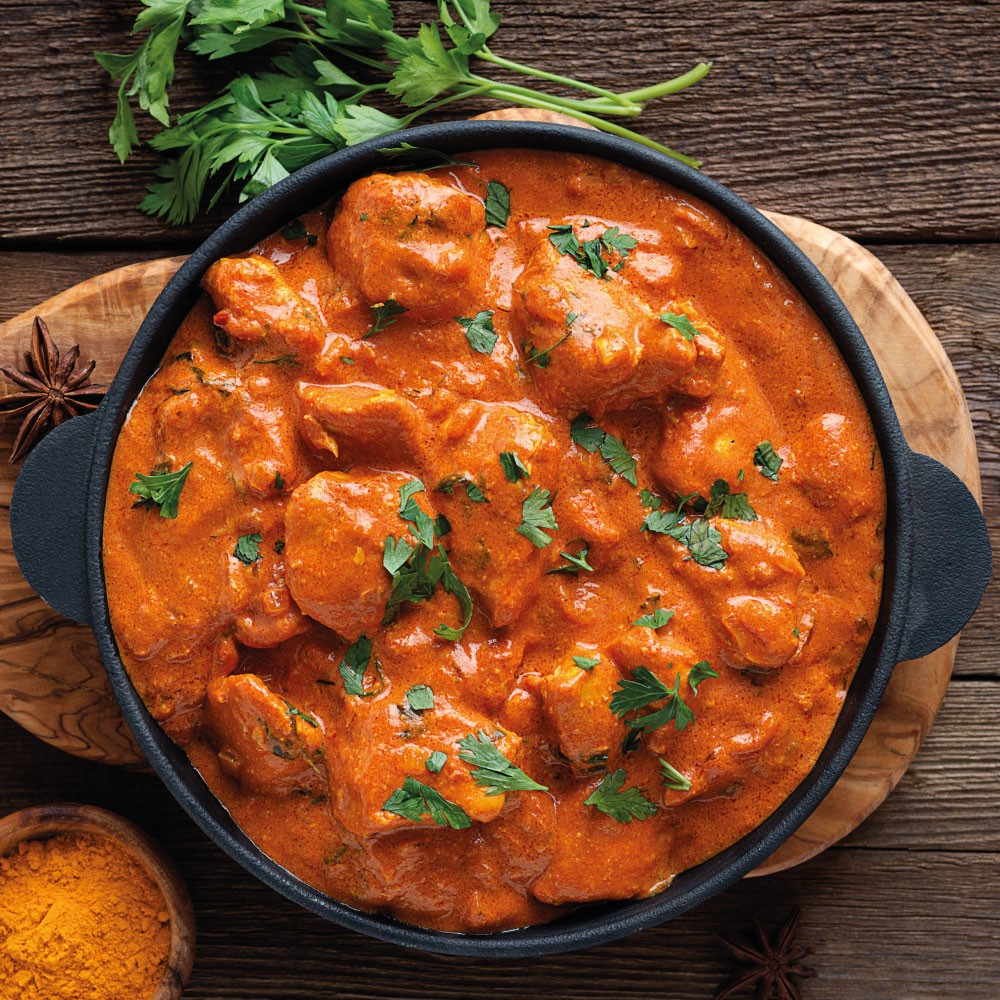

Butter Chicken

The most fragrant, creamy tomato sauce envelops tender pieces of chicken in this super easy, stovetop butter chicken recipe.
Ingredients
- Olive oil
- Garlic
- Ginger
- Yellow onions
- Chicken stock
- Tomato paste
- Cinnamon
- Cumin
- Garam masala
- Turmeric
- Boneless, skinless chicken breast>
- Lemon Juice
- Heavy cream
Recipe instructions
- Sauté onions, garlic and ginger for a few minutes.
- Stir in butter, stock, tomato paste, all of the spices—the flavorful base of the butter chicken sauce!—followed by all of the chicken pieces.
- Pop a lid on the pan and simmer until the chicken is done.
- Stir in lemon juice and heavy cream, and simmer on low for just a few minutes to let everything cohere.
- You’re done! We love this with plain, steamed basmati rice, and serve some warm naan on the side if you’ve got it!
Back to the recipies